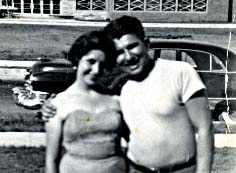
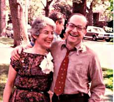
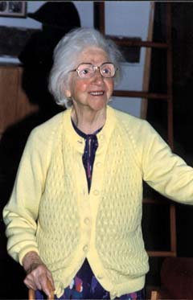

Eldorado
My father was a furrier, mostly
unemployed during the long years
of the depression, when I was
a boy. In 1939 my parents
abandoned me briefly to my Aunt Rose
in Goshen, NY, and my sister
to my Aunt Miriam in Brooklyn,
to make a fool's trip
to Florida in search of Eldorado
or merely a livelihood.
This was taken in Miami Beach,
dated February 1, 1939.
They had little resources
financially or emotionally,
and returned empty-handed.
Young marrieds

My sister Blossom and brother-in-law Freddie
moved from NYC to the potato fields
of Long Island where the new suburbs
were being built after World War II.
It was a long commute but it worked.
They had three children,
my niece Judy and my nephews
Richie and Gary. The marriage
eventually failed.
|
|
Surprise

My wife Gloria and I at our
25th anniversary surprise party,
May, 1982. My sister Blossom
and brother-in-law Jack drove us
from the house that Sunday
morning to a celebratory brunch
at Windows-on-the-World
atop the World Trade Center.
Jack and Bloss were active players
in the scheme. When we returned
we were greeted by scores
of relatives and friends,
some of whom we had not seen
in years. My daughter Rebecca,
then in college, had managed
a masterpiece of deception.
My mother

My mother outlived my father and all her
sisters. "Why am I living so long," she
complained. She was well into her nineties
with all her wits about her and most
of her health, but she had no capacity,
at least in these years, for happiness.
One day coming out of the bathroom
she said she was tired and lay down
on the floor and died.
|